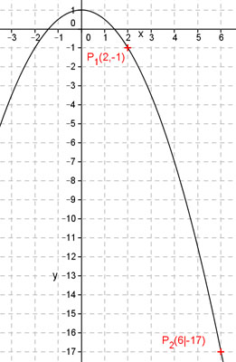

Aufgabe 56 Bestimmen Sie die Funktionsgleichung der Parabel der Form y = ax2 + b, die durch die Punkte P1(2|-1) und P2(6|-17) geht. Punktkoordinaten x1 = 2 und y1 = -1 eingesetzt: -1 = a * (2)2 + b -1 = 4a + b (1) Punktkoordinaten x2 = 6 und y2 = -17 eingesetzt: -17 = a * 62 + b -17 = 36a + b (2) Lineares Gleichungssystem: -1 = 4a + b | *(-1) -17 = 36a + b 1 = -4a - b -17 = 36a + b -------------- -16 = 32a |:32 a = -0,5 a = -0,5 in (1) eingesetzt: -1 = 4 * (-0,5) + b |-9 -1 = -2 + b |+2 b = 1 y = -0,5x2 + 1 